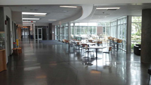
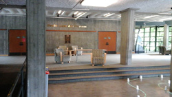
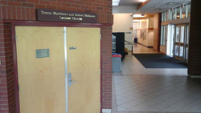
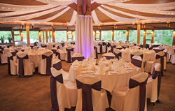
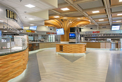

-
Travel to Victoria
-
Going to the Conference and around Victoria City
-
Getting Around in University of Victoria
-
WIFI Internet Access in University of Victoria
Travel to Victoria
The most convenient way of travelling to Victoria is by flight to Victoria International Airport (http://www.victoriaairport.com/) This international airport serves direct flights to Toronto, Vancouver, Calgary, Seattle, San Francisco, and many more destinations. |
|
| There are hourly flights (15 mins. duration) with Air Canada for passengers connecting through Vancouver airport (VYR). After you get off the flight, there are airport shuttle and taxi services that carries you to down-town and University of Victoria. If you missed an airport shuttle, regular buses are always available with $2.5 CAD per ticket and $5 CAD for a day pass. | |
If you get to Vancouver first by air or ground transportation, there are the BC Ferries Connector (http://bcfconnector.com/) shuttle services in addition to the regular buses to go over the Victoria-Vancouver BC Ferries. The shuttle services starts from either YVR airport or Vancouver down-town and directly goes to Victoria down-town without stopping. |
|
| If you are going by the regular bus services from Vancouver, then first get to the Bridgeport Skytrain Station in Richmond, take the No.620 bus to the Tsawwassen Ferry Terminal, and take the BC Ferries (http://www.bcferries.com/) to Victoria (Swartz Bay). After you get off the ferry, take the No. 70 or No. 72 buses to get to Victoria down-town. | |
| Drivers from Vancouver can directly proceed to the BC Ferries Tsawwassen Ferry Terminal and take the ferry to cross the sea, then take the BC-17 Highway to Victoria down-town. | |
If you start from Seattle, there are direct, passenger-only ferry connections from Seattle down-town to Victoria down-town (Clipper Vacations,http://www.clippervacations.com/). If you drive from Seattle, please go to the Port Angeles ferry port first and take the Black Ball Ferry Line (https://www.cohoferry.com/) to go to Victoria. |
Going to the Conference and around Victoria City
The campus of University of Victoria is approximately 20 minutes driving from down-town. The city of Victoria has many convenient transport services to move around, including bus, taxi and car rental. The BC Transit (http://bctransit.com/victoria/home) website provides official schedule information for all the bus routes run around the city. Specifically, Route 15, 4, 14, 7 and 11 runs between University of Victoria and down-town, while route 16 and 26 connect the university and the Uptown Shopping Centre. |
|
| There are quite a few taxi companies which run their fleet around the city 24 hours a day, seven days a week. Victoria Taxi (250-383-7111), Bluebird Cabs (250-383-2222) and Yellow Cab of Victoria (250-381-2222) are the closest businesses around the city. They also provide ferry and airport services. Major car rental companies also has their branches on the island. AVIS, Budget, Enterprise and National Car Rental services are located conveniently in Victoria down-town. Please consult their websites for detailed information. |
|
Getting Around in University of Victoria
Click Here to Download the Official Campus Map (without marking)
In an emergency around the University of Victoria campus,
call 9 1 1 or Campus Security 250-721-7599
BWC |
Bob Wright Centre, Room A104, Room B150 |  |
| This is where the conference management and registration are located. The two lecture theatres in this building hosts AI's tutorial sessions on May 31st, as well as all GI's sessions in the next three days, and the Conference Reception on June 1st evening. | ||
MAC |
MacLaurin Building, Room A144 |  |
| This is where the CRV sessions are located. Posters will be placed in the large, bright hall-way in front of the lecture theatre. | ||
DSB |
David Strong Building, Room C103 |  |
| This is where the AI sessions from June 1st to June 3rd are located. Posters will be placed in the long and panoramic hall-way in front of the lecture theatre. | ||
CLUB |
The University Club, http://club.uvic.ca/ |  |
| This is where the Conference Banquet on June 2nd evening will be hosted. | ||
University Food Services around the campus provide casual food and drinks. The catering hall in the Student Residences will open from early morning till late night, while the other places may serve lunch and/or dinner. Please see University Food Services, Dining locations on campus (http://www.uvic.ca/services/food/where/index.php). |
 |
WIFI Internet Access in University of Victoria
University of Victoria provides the standard eduroam wifi services across the campus. The university's official guides for connecting to eduroam can be found here:
https://www.uvic.ca/systems/support/internettelephone/wireless/eduroam.php.